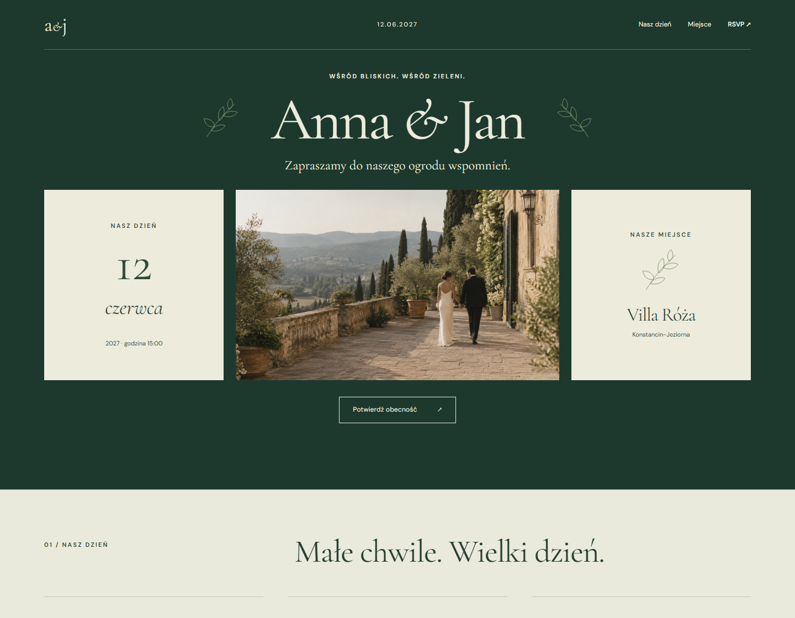

02 A
Olive Atelier

Oliwkowy kolor, miękka kursywa, pojedyncza gałązka i fotograficzna opowieść. Asymetria nadaje całości lekkość.
#f1f0e5#304939#a6ae91
Cormorant + DM Sans · Naturalny, śródziemnomorski spokójOliwkowy kolor, miękka kursywa, pojedyncza gałązka i fotograficzna opowieść. Asymetria nadaje całości lekkość.

Głęboka zieleń, spokojna symetria i jasne panele przypominające karty z zielnika. Ogród w bardziej uroczystej odsłonie.